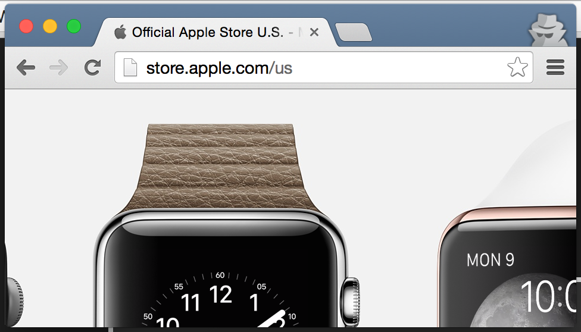
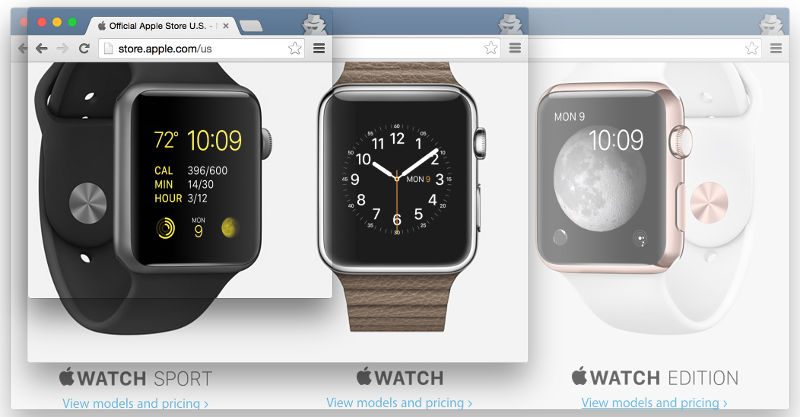

Let's Learn
Responsive Web Design
Derek Briggs - Jared Faris
Download: bit.ly/CPLRWD
Today's Topics
- Brief bios
- Target audience
- Mobile landscape
- Browser tools
- CSS basics
- RWD design/dev process
- Using the Bootstrap grid
- Performance, bandwidth, etc
- Questions
About Us
Target Audience
Mobile landscape
Options
- Native
- Mobile Web (m.)
- Hybrid
- RWD
Native
- + Fast
- + Fully access to all available features
- - Requires specialized skills
- - Cost of maintaining each app in addition to main site
Mobile Web
http://m. sites
- + Doesn't affect existing apps
- + Cheaper than a rewrite
- + Can work across browsers
- - Dramatically different user experience
- - Cost of maintaining two web sites
Hybrid
Xamarin, Cordova, etc.
- + Leverages skills your team already has
- + Access to most device features
- + Can work across browsers
- - May have performance penalties
- - May incur licensing costs
RWD
- + Leverages skills your team already has
- + Can work across browsers
- + No licensing costs
- - Limited and varying access to device features
- - May be difficult to implement on existing sites
What is this RWD?
- Modern web design
- Building sites that respond to each device
- Finding/fixing where designs break down
- Creating a consistent experience across devices
Example
http://www.bostonglobe.comBrowser Tools
Today, use Chrome
There's an entire session dedicated to F12 tools across all browsers if you're interested.

HTML Inspection
Dev Tools - HTML
- Search
- Insert
- Delete
- Edit as HTML
Edit this list
- 1
- 2
- 4 needs deleted
- 4
- Search for me
- 6 edit html
Copying/Dragging
- I should be first
- I should be third
- I should be second
- There should be two of me
Dev Tools - CSS
Editing styles
- You can't see me
- But you can see me
Box Model manipulation
This may be really hard to read
because it's all squished together
so maybe you should consider padding.
I mean seriously, that's a lot of
text, all in one really dense block.
Tracing Computed Styles
I should be blue.
Finding Your Changes

What does it look like on mobile?

View A Real Site
 http://www.bostonglobe.com
http://www.bostonglobe.com
CSS basics
- CSS Reset/Normalize
- Box Model
- Positioning
- Media Queries
What is a Responsive Grid?
What are breakpoints?
- Set breakpoints when the design breaks - not when the device changes
- Responsive Viewport Meta Tag
-
Lets Build.
Designing RWD Sites
- Building new designs
- Retrofitting old designs
Building New Designs
Hint: This is a good time to ask questions
Retrofitting old designs
Find out how badly it breaks
Look for logical breakpoints
You won't catch all of them but the goal is to figure out how badly off your site is.
Estimate the effort
- How much work to bolt on RWD styles?
- How much work to rebuild the UI over your existing app?
*If* the effort is minimal...
Tackle it desktop first
Start by resizing your browser down and fixing the breakpoints with media queries.
Be sure to test with real devices. Does touch work?
Intro to Bootstrap
What is Bootstrap?
- Responsive grid
- Stylized buttons, inputs, etc
- Responsive/adaptive components
Bootstrap Grid
- Container - Starts the Bootstrap grid
- Row - Horizontal group of columns
- Column - A slice of a column where you put content
- Columns get sizes applied to respond to browser sizes
Bootstrap Column Sizing
- Bootstrap grids have 12 columns
- Bootstrap columns have a screen size label and column #
- Example:
- col-md-4
- col-xs-2
- col-lg-12
Bootstrap Controls
http://getbootstrap.com/css/Bootstrap Grid Hands-On
Open the "Bootstrap" folder
RWD Site Hands-On
Open the "Responsive" folder
Retrofitting Hands-On
Open the "Retrofitting" folder.
Performance, bandwidth, etc
Example Site
http://f12talk.azurewebsites.net/27MB site...ouch. Throttle your bandwidth and try it out.